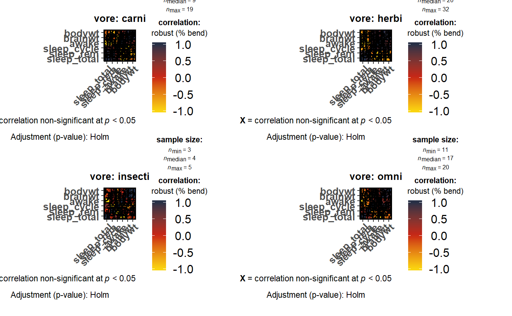

Visualization of a correlalogram (or correlation matrix) for all levels of a grouping variable
Source:R/grouped_ggcorrmat.R
grouped_ggcorrmat.RdHelper function for ggstatsplot::ggcorrmat to apply this
function across multiple levels of a given factor and combining the
resulting plots using ggstatsplot::combine_plots.
grouped_ggcorrmat( data, cor.vars = NULL, cor.vars.names = NULL, grouping.var, title.prefix = NULL, output = "plot", ..., plotgrid.args = list(), title.text = NULL, title.args = list(size = 16, fontface = "bold"), caption.text = NULL, caption.args = list(size = 10), sub.text = NULL, sub.args = list(size = 12) )
Arguments
| data | Dataframe from which variables specified are preferentially to be taken. |
|---|---|
| cor.vars | List of variables for which the correlation matrix is to be
computed and visualized. If |
| cor.vars.names | Optional list of names to be used for |
| grouping.var | A single grouping variable (can be entered either as a
bare name |
| title.prefix | Character string specifying the prefix text for the fixed
plot title (name of each factor level) (Default: |
| output | Character that decides expected output from this
function: |
| ... | Arguments passed on to
|
| plotgrid.args | A list of additional arguments to |
| title.text | String or plotmath expression to be drawn as title for the combined plot. |
| title.args | A list of additional arguments
provided to |
| caption.text | String or plotmath expression to be drawn as the caption for the combined plot. |
| caption.args | A list of additional arguments
provided to |
| sub.text | The label with which the combined plot should be annotated. Can be a plotmath expression. |
| sub.args | A list of additional arguments
provided to |
Value
Correlation matrix plot or correlation coefficient matrix or matrix of p-values.
References
https://indrajeetpatil.github.io/ggstatsplot/articles/web_only/ggcorrmat.html
See also
Examples
# \donttest{ # for reproducibility set.seed(123) # for plot # (without specifying needed variables; all numeric variables will be used) ggstatsplot::grouped_ggcorrmat( data = ggplot2::msleep, grouping.var = vore )# for getting plot ggstatsplot::grouped_ggcorrmat( data = ggplot2::msleep, grouping.var = vore, cor.vars = sleep_total:bodywt, corr.method = "r", p.adjust.method = "holm", colors = NULL, package = "wesanderson", palette = "BottleRocket2", plotgrid.args = list(nrow = 2) )#> Note: In the correlation matrix, #> the upper triangle: p-values adjusted for multiple comparisons #> the lower triangle: unadjusted p-values. #>#>#> Note: In the correlation matrix, #> the upper triangle: p-values adjusted for multiple comparisons #> the lower triangle: unadjusted p-values. #>#>#> Note: In the correlation matrix, #> the upper triangle: p-values adjusted for multiple comparisons #> the lower triangle: unadjusted p-values. #>#>#> Note: In the correlation matrix, #> the upper triangle: p-values adjusted for multiple comparisons #> the lower triangle: unadjusted p-values. #>#># for getting correlations ggstatsplot::grouped_ggcorrmat( data = ggplot2::msleep, grouping.var = vore, cor.vars = sleep_total:bodywt, output = "correlations" )#> # A tibble: 24 x 8 #> vore variable sleep_total sleep_rem sleep_cycle awake brainwt bodywt #> <chr> <chr> <dbl> <dbl> <dbl> <dbl> <dbl> <dbl> #> 1 carni sleep_total 1 0.92 0.38 -1 -0.52 -0.44 #> 2 carni sleep_rem 0.92 1 0.12 -0.92 -0.5 -0.48 #> 3 carni sleep_cycle 0.38 0.12 1 -0.38 -0.81 -0.27 #> 4 carni awake -1 -0.92 -0.38 1 0.52 0.44 #> 5 carni brainwt -0.52 -0.5 -0.81 0.52 1 0.86 #> 6 carni bodywt -0.44 -0.48 -0.27 0.44 0.86 1 #> 7 herbi sleep_total 1 0.86 -0.71 -1 -0.39 -0.38 #> 8 herbi sleep_rem 0.86 1 -0.41 -0.86 -0.43 -0.4 #> 9 herbi sleep_cycle -0.71 -0.41 1 0.71 0.85 0.71 #> 10 herbi awake -1 -0.86 0.71 1 0.39 0.38 #> # ... with 14 more rows# }